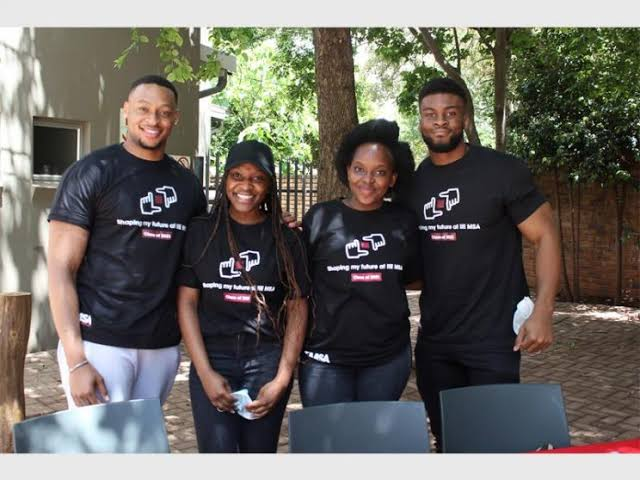
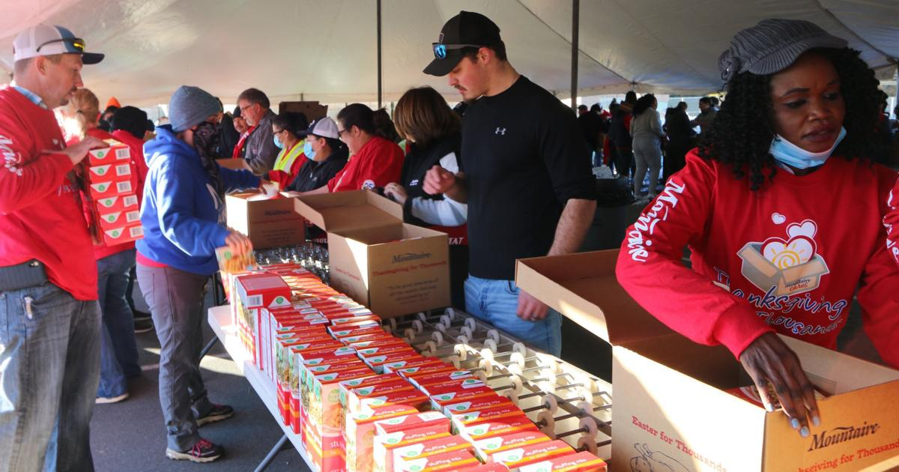
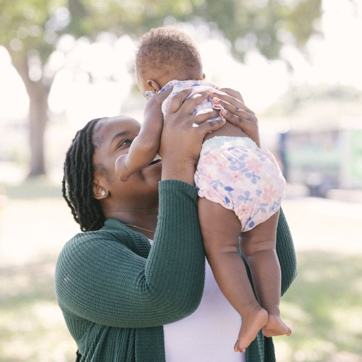

Get Involved
There are only a few ways you can help our cared and loved children in our organisation. You can volunteer your time, donate, or became a foster or adaptive parent, your contribution can help us provide a safe and loving environment for our beloved children in need.

Volunteer
You can make a difference by voulnteering your time and helping with our programmes,daily activities and events.
Volunteer
Donate
Your donation help us provide food,clothing,education and care to our beloved children and families who need it.
Every contribution counts,no matter how small, it helps!
Donate
Became a Foster or Adoptive Parent
A child needs a safe loving home.And you can give a child the family they deserve.
Our social workers will guide you through the foster or adaption process and explain what is needed.
Became a ParentFind a way to help
Search, filter or sort to find the best way for you to make a difference.
Frequently asked questions
Yes. Fill in the Give Time form on our Give page and our team will contact you about how you can help.
Use the Give Hope form on our Give page to pledge an amount and we will email you the banking details. Every contribution counts, no matter how small.
Our social workers will guide you through the foster or adoption process and explain what is needed. Start by filling in the Give a Child a Home form on our Give page.
Bethany House Trust is based in Monument, Krugersdorp. See the map on our Contact page.